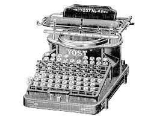
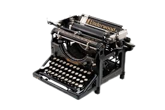

Embracing Nostalgia: The Charm of Vintage Typewriters
Published on April 15, 2023
Step back in time with us as we explore the enduring charm of vintage typewriters. Discover the craftsmanship, design, and the unique typing experience these machines offer
Read More

Choosing the Right Typewriter for Your Writing Style
Published on March 28, 2023
Not all typewriters are created equal. Learn about the different types of typewriters and find the one that suits your writing style. Whether you're a novelist, poet, or journalist, there's a perfect typewriter for you..
Read More